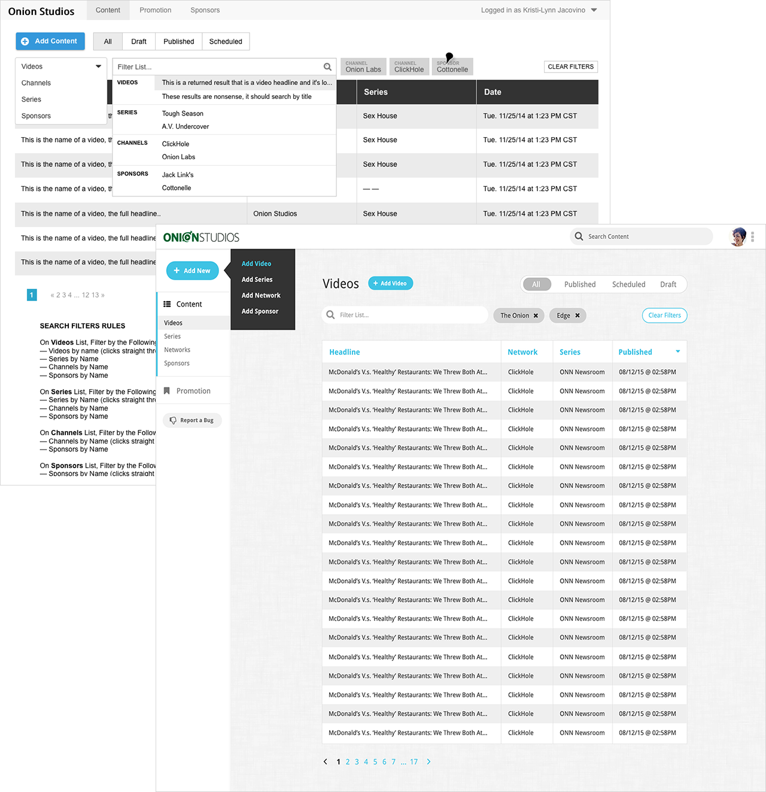
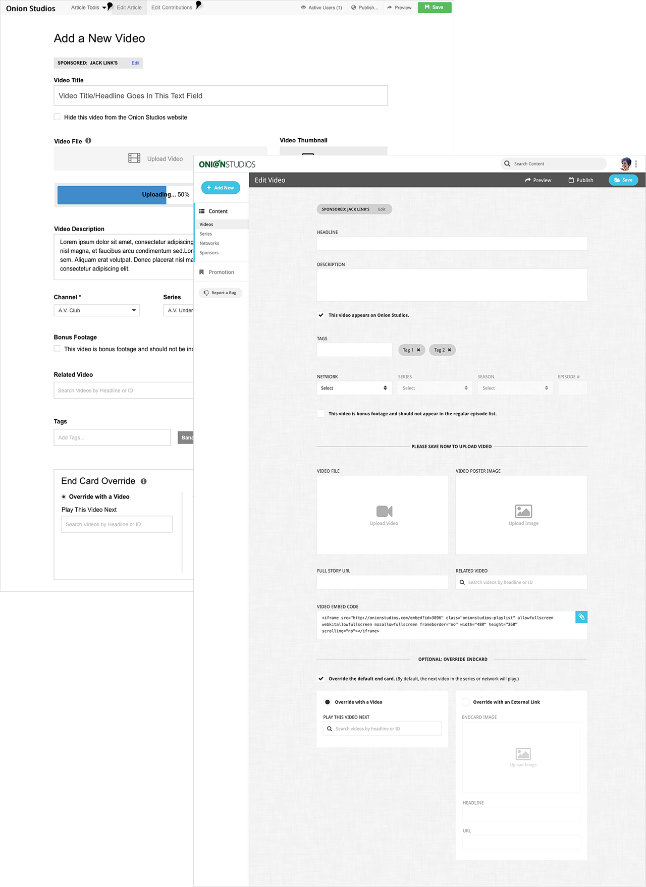
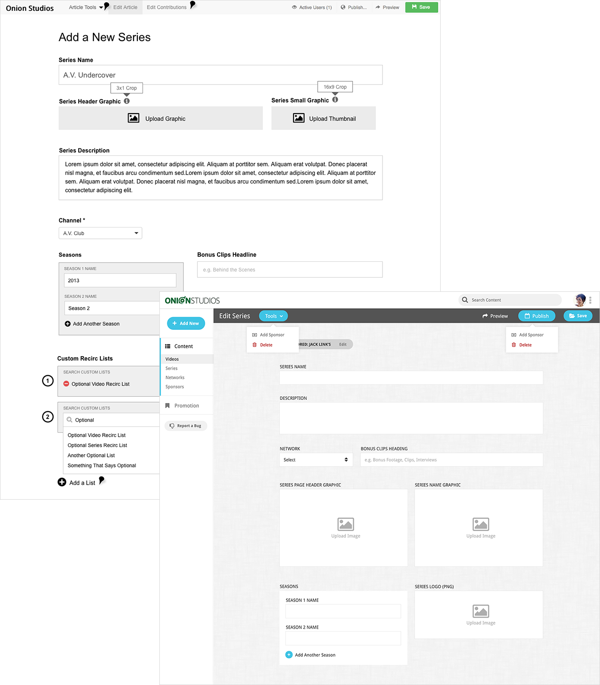
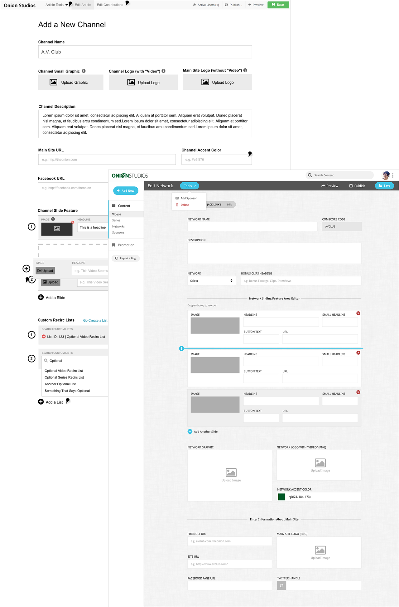

What is it?
A video-specific CMS to host all Onion, Inc. video content.
A video-specific CMS to host all Onion, Inc. video content.
We wanted to add a property that was strictly video, and at the same time create a singular CMS for video content that would populate the sites without forcing editorial to double their workload by uploading the content twice. Since we were going to be building out a video-specific CMS, we also took this opportunity to add in a new feature that editorial was requesting to manually control the content of the end cards, which was particularly useful for branded content when they would prefer to link to a brand's landing page.
For the design of the front end, we surveyed the staff about their video binging and general internet video needs and dreams, and came up with a solution that kept a space for each site’s content independently, while still feeling like they were all part of one family.
I designed a new custom CMS for Onion Studios from the ground up, separate from Bulbs but closely connected to it, which would serve the dual function of hosting the content for the Onion Studios website directly, and also push that video content to the individual sites. The backend provided a singular location for editorial staff to upload all video content (including branded content), appropriately tag it (apply it to the right channel, series, and season), and have it automatically served to the appropriate website’s video section.



